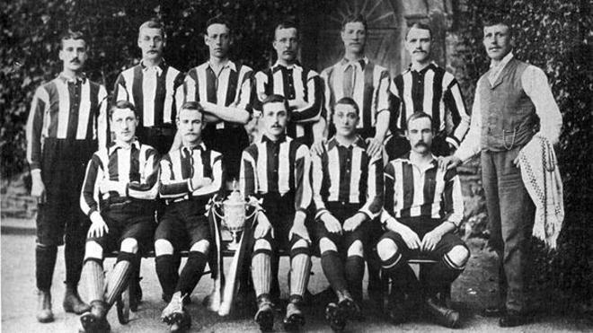
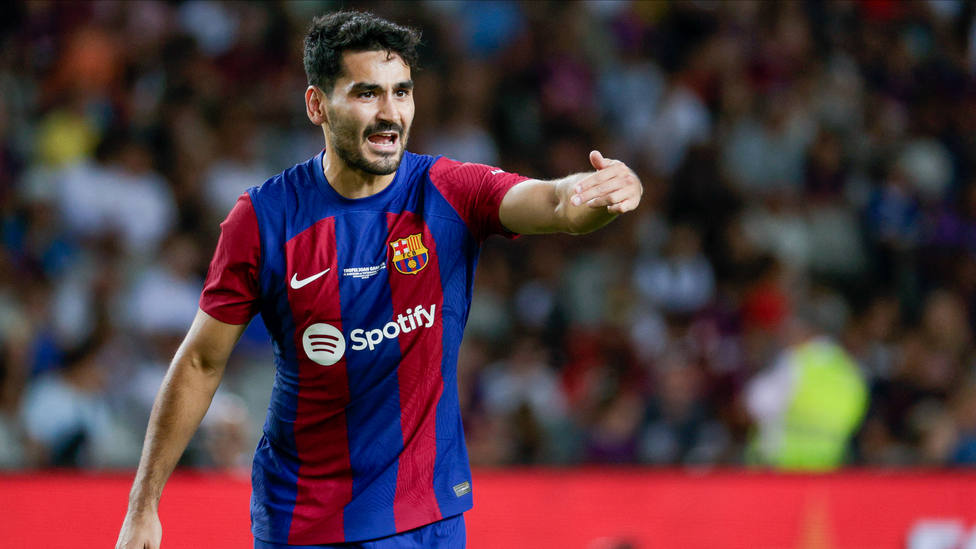

El fútbol cumple 160 años: así nació el deporte más popular del mundo
El fútbol era un deporte incipiente y confuso: tenía dos variantes, una en la que se permitía el uso de las manos, así como golpear al adversario, y otra que abogaba por suprimir la dureza de los choques y sobre todo, evitar el uso de las manos.
Los primeros se hacían llamar los del 'código Rugby'. Los segundos formaban parte del 'código Cambridge'. En aquella reunión de 1863 se acabaría imponiendo -no sin dificultades y tras muchos debates- el criterio de quienes preferían jugar al fútbol sin las manos. Ese mismo día se redactaron las primeras reglas y nació, de manera oficial, la FA, la Football Association, la federación inglesa de fútbol. Sus primeros miembros acordaron el pago de una guinea (21 chelines) en concepto de suscripción.
Gündogan habla de Vinicius
Gündogan repasó en la televisión catalana Esport3, la previa del encuentro ante el Real Madrid, en el que habló sobre el caso Vinicius: "Alguien puede interpretar las acciones de Vinícius como una provocación, pero para mí, sinceramente, no lo son. Evidentemente, él ya sabe que si hace estas cosas le silbarán. Pero quizá le gusta que le silben, no lo sé...".
El jugador también habla sobre su fichaje con el Barça y el rol que quiere tener dentro del equipo, sin ser él la máxima estrella: "Yo no he venido aquí para brillar solo ni ser una superestrella. He venido aquí para ayudar al equipo a tener éxito y ayudar a mis compañeros a ser mejores".
Lo de Bellingham es brutal
Este sábado hay Clásico en LaLiga. El número 255 en la historia. Barça y Madrid se reencuentran después del 3-0 a favor de los de Xavi, el pasado 29 de julio, en el amistoso de la gira americana. Ahora es otra historia. Separados por un punto, el Madrid llega como líder y el Barça, tercero. Si ganan los de Xavi, habrá sorpasso en el primer puesto, siempre que el Girona no gane al Celta.
Si los de Ancelotti se imponen, afianzarán su supremacía. Y encima se juega en un escenario circunstancial. Montjuïc es la nueva casa del Barcelona, hasta que esté listo el nuevo Camp Nou. Es un Clásico muy especial por tanto. Y para analizarlo, AS invita a dos exfutbolistas de primer nivel que vivieron cuatro Clásicos con las botas puestas: Abelardo y Mijatovic.
Comments
De la Fuente quiere renovar "si hay convencimiento por las dos partes"
Posted by Migue Angel Towers on 23/10/2023